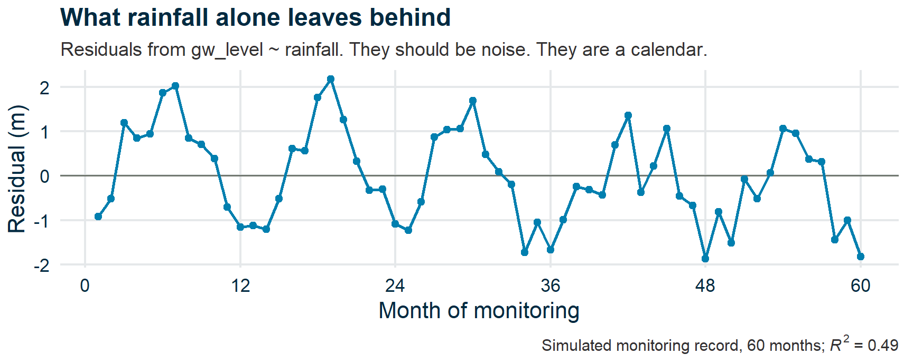
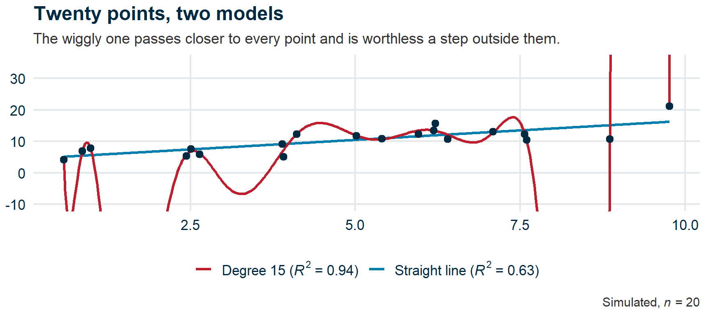
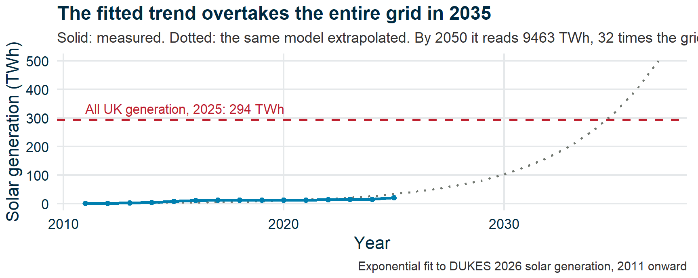

Research Skills — Week 8
You can now test hypotheses, compare groups, and quantify effect sizes.
This week: models.
A model is a simplified story about how the world works. The question is always: how much does it capture, and what does it leave out?
Submit questions:
PollEv.com/geol
text geol to 07480 781235
💬 Homework recap
The Economist, 23 September 2026: “Many surgical interventions are little better than placebo”.
Hands up: a row? Two rows? Full house?
Which square was hardest to fill?
Patients felt better after surgery. Three stories fit that:
Pooling 100 surgical trials: about two-thirds of the improvement was stories 2 and 3.
| Compare | Isolates |
|---|---|
| Surgery vs sham surgery | the operation itself |
| Sham surgery vs no treatment | the placebo |
| No treatment, before vs after | natural recovery |
One 2002 trial splashed water into a dish so the sham sounded right.
Scans find tears and “abnormalities” in knees, backs and shoulders.
The same abnormalities are common in people with no pain at all.
How plausible was this before we tested?
What does each of these look like in a geological investigation?
| Surgery | Geology |
|---|---|
| Only recovered patients return | Dry holes and failed slopes never get written up |
| Patients heal anyway | Groundwater recovers once pumping stops. Did the remediation work? |
| Abnormal scans in painless knees | Faults are everywhere. Is this one why the ground subsided? |
| Surgeons have no uncertainty | Experts disagree on the same seismic section |
In geology nobody says the word “placebo”. Would you spot these?
🎓💻 Concept block 1
A deliberate simplification that captures some features of reality and ignores others.
Every statistical test you’ve run contains an implicit model.
The t-test models the data as two normal distributions, one per group.
Now we make the model explicit.
\[y = \beta_0 + \beta_1 x + \varepsilon\]
“y increases by β₁ for every one-unit increase in x, plus noise.”
That’s the whole model. It’s powerful — and limited.
| Element | Meaning |
|---|---|
| Intercept (β₀) | Predicted y when x = 0 |
| Slope (β₁) | Change in y per unit change in x |
| R² | Proportion of variance explained |
| p-value (slope) | Is the slope distinguishable from zero? |
✏️💻 Exercise 1
Solar panel output against panel temperature.
Before you plot: do hotter panels produce more power, or less?
lm()Is the relationship linear? Does the model capture the pattern?
🎓 Concept block 2
Four plots, two that matter most:
| Plot | What to look for |
|---|---|
| Residuals vs Fitted | Pattern = non-linearity or heteroscedasticity |
| QQ plot | Departures from the line = non-normal residuals |
✏️💬 Exercise 2
⚒️ HolmesCo
Geological Consultants Since 2019
“Our Trends Hold Water”™
Groundwater Analysis Report
Linear model: groundwater level ~ rainfall. R² = 0.49.
“Rainfall is the dominant control on groundwater levels.”
Exercise 3 on your page: reproduce their model, then plot what it left behind.

🎓💬 Concept block 3
A model that fits the training data perfectly but fails on new data.
It’s memorized the noise.
The polynomial passes close to almost every point, and swings wildly between them. The straight line fits worse, but predicts better.
More complex ≠ more useful.

A model that works within the observed range but breaks down outside it.
Example: UK solar generation has grown roughly exponentially since 2010. Extrapolate the curve, and by 2035 solar alone exceeds all UK generation.

What’s the model not capturing?
⚒️ HolmesCo
Geological Consultants Since 2019
“Our Trends Hold Water”™
“Our linear trend in groundwater decline predicts the aquifer will be empty by 2028.”
What would you need to know before believing this?
Things the model structurally cannot represent.
You can only fix a blind spot if you know it’s there.
Overfitting: too much faith in your data.
Extrapolation: too much faith in your model.
Blind spots: too much faith in your framework.
✏️ One sentence
“In my project, the biggest thing my analysis might be missing is…”
Submit questions:
PollEv.com/geol
text geol to 07480 781235
Application session: “Fitting and breaking models”
You’ll fit models to your data — and deliberately try to break them.